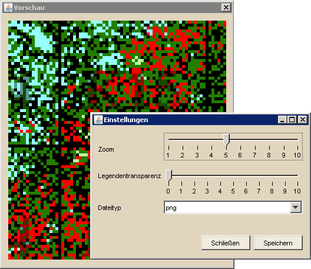

Erstellen von Fotos der Minimap |
|
|  | |
| Dieses Werkzeug erlaubt es, einen Ausschnitt der Weltkarte bzw. die komplette Weltkarte als Bild auf der Festplatte abzuspeichern. Hierfür muss zuerst mit dem entsprechenden Werkzeug ein Auswahlrechteck mit gedrückter linker Maustaste auf der Minimap aufgespannt werden. Anschließend öffnen sich zwei Dialog, zum einen die Vorschau des gewählten Ausschnittes, zum andere die Einstellungen für das zu speichernde Bild. Hier kann man etwa den Zoom verändern, um die Karte entsprechend zu vergrößern, was direkt auf die Vorschau angewendet wird. Weiterhin kann man die Transparenz wählen, mit der die Namen der markierten Spieler und Stämme im gespeicherten Bild in der unteren rechten Ecke gezeichnet werden. Für beste Sichtbarkeit ist allerdings empfohlen, die Transparenz auf dem Standardwert 0 gesetzt zu lassen, da sonst die Markierungsfarben unter Umständen sehr schlecht zu erkennen sind. Die untere Grafik zeigt das Resultat inklusive integrierter Legende. Die Einblendung des Kontinents kann man programmweit unter den Karteneinstellungen deaktivieren. |
|
 |